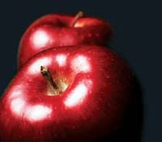

If you happen to be driving out in the country on a beautiful fall day, and you pass a roadside sign that says 'fresh apple cider,' by all means stop! This is the time of year to enjoy freshly pressed cider, and some of the best available is from local cider mills.
When it's in season, you can also find apple cider in the grocery store. Look for the stuff that's made locally and hasn't been heavily filtered. It will have the best taste. The best ciders also are made with a blend of apples, some sweet, and some just a bit tart for added depth of flavor.
If you enjoy apple cider and are over 21, consider seeking out different kinds of hard cider, too. There's a long tradition of making alcoholic ciders both in Europe and in the United States, and the flavors can be as varied and textured as any wine or beer. That's because there are thousands of apple varieties that contribute their unique flavors to cider, whether hard or sweet.
Feeling thirsty? Here are five fun ideas for exploring cider flavors from simple cider sampling, to semi-professional cider making. Enjoy!
1. Sample Different Ciders. If you have several cider mills in your area, why not try sweet cider from all of them? They'll all have different flavors, and when they're in season, you should be able to find them at the grocery store. Much hard cider is very sweet, so seek out dryer types to get a better idea of the range of flavors.
2. Visit a Cider Mill. It's also fun to visit cider mills to see how sweet cider is made. It's especially enjoyable if they have presses you can see working, or 'pick your own' orchards where you can pick and eat apples right from the tree. A good place to find cider mills near you is the Local Harvest Web site, although apples are scarce in some parts of the country this year because of an unusually late spring freeze.
3. Read a Cider Book. If you'd like to learn more about the history and complexities of cider, two excellent books on the subject are Cider, Hard and Sweet, by Ben Watson, and Cider, by Annie Proulx. Both are popular enough you can probably find them at your local library, or look for them online.
4. Brew Your own Hard Cider. One reason hard cider was the drink of choice in the United States for so many years was that it was easy to make and kept well. Here's how you can make your own.
5. Press Your own Apples! If you become really interested in apple cider you can start from scratch, and make cider just like the early homesteaders. You can plant rare varieties of apple trees with fruit especially suited for making cider and then press the apples yourself with a cider press. You can buy home-scale cider presses, or even build one yourself. It's a lot of work, but it also allows you to blend apples in hundreds of ways. For pure cider creativity, it's pretty hard to beat.
Do you have favorite apple varieties for cider? Do you make your own? Share your thoughts in our comments section, below.
|
 PHOTODISC/GETTY IMAGES Fall is the perfect time of year to enjoy fresh apples and freshly pressed apple cider. |
|
|